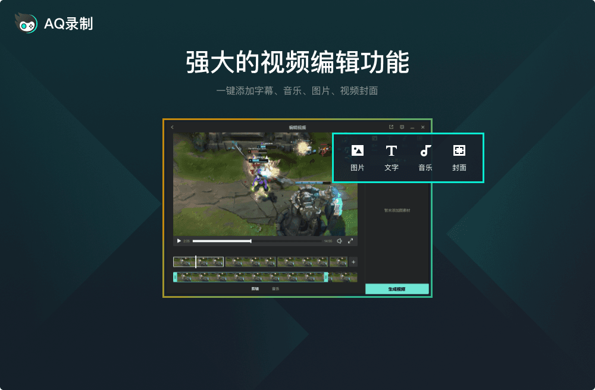

一切录屏所需功能，开箱即用
支持4K/1080P高清录制，画质清晰细腻，帧率最高可达60fps，画面流畅不卡顿
自由选择录制区域，全屏录制或指定窗口，灵活满足不同场景需求
录制过程中添加画笔、箭头、文字等标注，突出重点内容，让视频更专业
系统声音与麦克风同时录制，支持音量独立调节，声音清晰同步无延迟
录制完成后一键导出，支持MP4/AVI/GIF等多种格式，无需等待即可分享
设定开始和结束时间，自动启动和停止录制，无需守在电脑前
操作简单，一目了然，新手也能快速上手

关于AQ录制的常见问题解答
是的，AQ录制完全免费，没有任何功能限制，无需注册即可使用全部功能。
目前支持 Windows 10 和 Windows 11 的64位系统。后续将推出更多平台版本。
AQ录制采用硬件加速技术，CPU占用率低，录制时对电脑性能影响很小，可以同时进行游戏或其他操作。
您可以通过QQ联系我们：3080040094，工作日9:00-18:00在线为您解答问题。